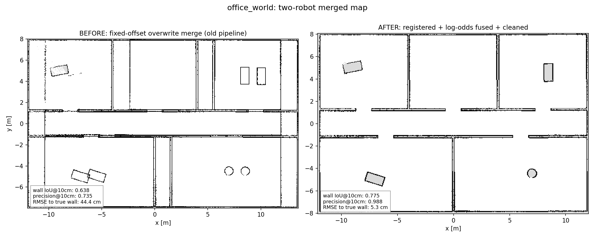
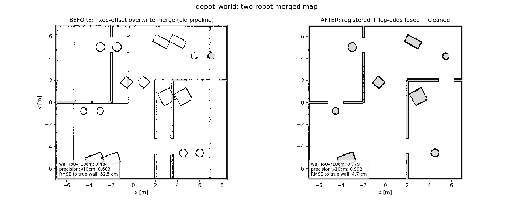
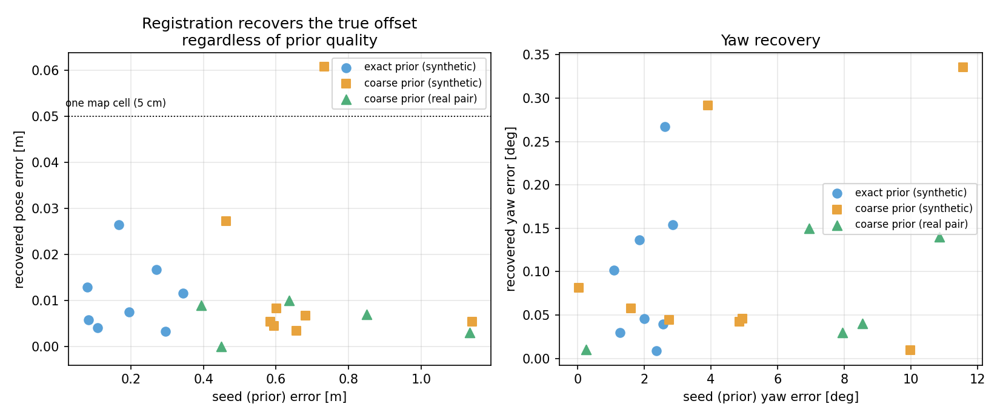
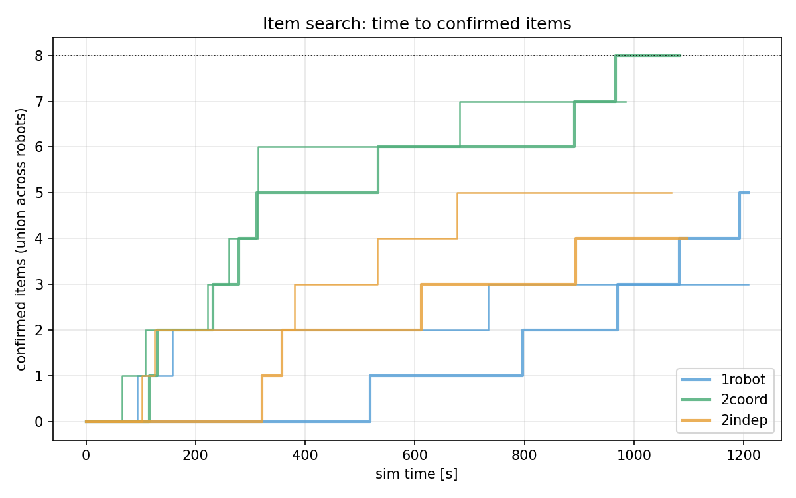
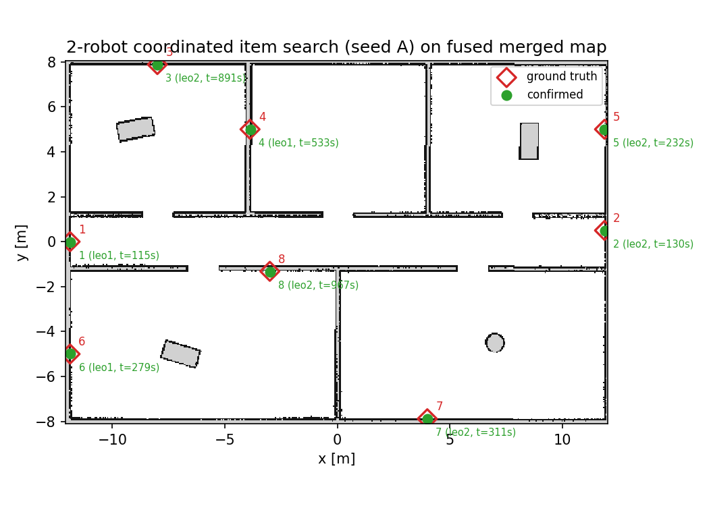

Overnight autonomous session 2026-07-13 → 07-14 · office_world / depot_world · 8 sim runs (RTF capped 1.0, GPU-rendered sensors, headless), zero explorer errors.
/odom comes from Gazebo's world-frame OdometryPublisher, so each robot's
SLAM frame is already world-anchored — the hard-coded (1.5 m, 0) spawn-offset in the
static TFs and compositor double-shifted leo2's submap. Occupancy-grid registration exposed
this: seeded at (1.5, 0) it converged to (−0.055, 0.000, 0.35°).New offline pipeline (scripts/map_fusion.py, also run live by the compositor):
multi-resolution correlative registration on a likelihood field of occupied cells →
per-cell log-odds fusion (with weak free votes beside a map's own walls, so sub-cell wall edges
cannot punch holes in the other map's walls) → small-component despeckle, unknown-hole fill,
world-bound clip. Scored against the world SDF rasterized at the lidar plane
(scripts/world_ground_truth.py).


Before = the old fixed-offset overwrite merge (doubled partitions, ghost desks and barrels 1.5 m apart). After = registered + fused + cleaned, from the same per-robot maps.
| world | pipeline | wall IoU@10cm | precision@10cm | recall@10cm | RMSE to true wall |
|---|---|---|---|---|---|
| office | before | 0.638 | 0.735 | 0.854 | 44.4 cm |
| office | after | 0.775 | 0.988 | 0.830 | 5.3 cm |
| depot | before | 0.484 | 0.603 | 0.799 | 52.5 cm |
| depot | after | 0.779 | 0.992 | 0.826 | 4.7 cm |
| office (cameras-on run) | after | 0.804 | 0.988 | 0.845 | 3.9 cm |
Reference: a good single-robot office map scores IoU@10cm ≈ 0.70 (recall is bounded by what the lidar can reach), so “after” meets the visually-indistinguishable bar. Registration corrections vs identity: office (−0.055 m, 0.000 m, +0.35°), depot (−0.010 m, −0.010 m, +0.05°).

Synthetic ground truth (a real office map split into two overlapping halves, one displaced by a known transform): with an exact prior (seed ≤0.3 m/3° off) recovery error is 0.011 m / 0.10° mean; with a coarse prior (seed up to 1.14 m / 11.6° off, the Priority-3 assumption) it is 0.015 m / 0.11° mean, 0.061 m / 0.34° max (n=8 each). On the real pair, 5/5 random coarse seeds (±1 m, ±15°) converge to within 0.01 m / 0.15° of the exact-window answer — the known-spawn assumption is not needed, only overlapping coverage and a rough prior.
Multi-robot port of the PR4 item search: per-robot mock ArUco detectors (own-frame, LOS on the
robot's own map, markers shifted common→own via TF), a shared item registry on
/item_claims (peers adopt confirmed items and skip redundant verification detours), and
shared camera-coverage claims every 3 s (no wall is swept twice; sweep targets near a
peer's active claim are skipped). Conditions: 1robot, 2indep (no sharing,
no coordination), 2coord (allocation + sharing). office_world, 8 wall markers,
two layouts (seed A/B), 20-minute sim cap, cameras on.

| condition | seed A found | seed B found | time to 4 items (A / B) |
|---|---|---|---|
| 2coord | 8/8 | 7/8 | 279 s / 261 s |
| 2indep | 4/8 | 5/8 | 894 s / 532 s |
| 1robot | 5/8 | 3/8 | 1082 s / — |

All 8 ground-truth markers (red diamonds) confirmed (green), annotated with the discovering rover and sim time, drawn on that run's own fused merged map (IoU@10cm 0.804). leo1 cleared the west rooms, leo2 the east — the division of labour the allocation is designed to produce.
summary.md — this report in markdown, plus per-priority detailp1_fusion/ — fused maps, before/after figures, ground truths, registration
validation JSONsitem_search/ — six benchmark run dirs (items.jsonl, per-robot + merged maps,
logs, trajectories), summary.json, figuresruns/ — the two P1 map-collection runs + smoke testscripts/map_fusion.py, world_ground_truth.py,
validate_registration.py, map_compositor.py (live fusion),
item_recorder.py, analyze_item_search.py, auto_item_run.sh,
run_item_benchmark.sh; explorer/detector changes in
src/leo_rover_exploration/.